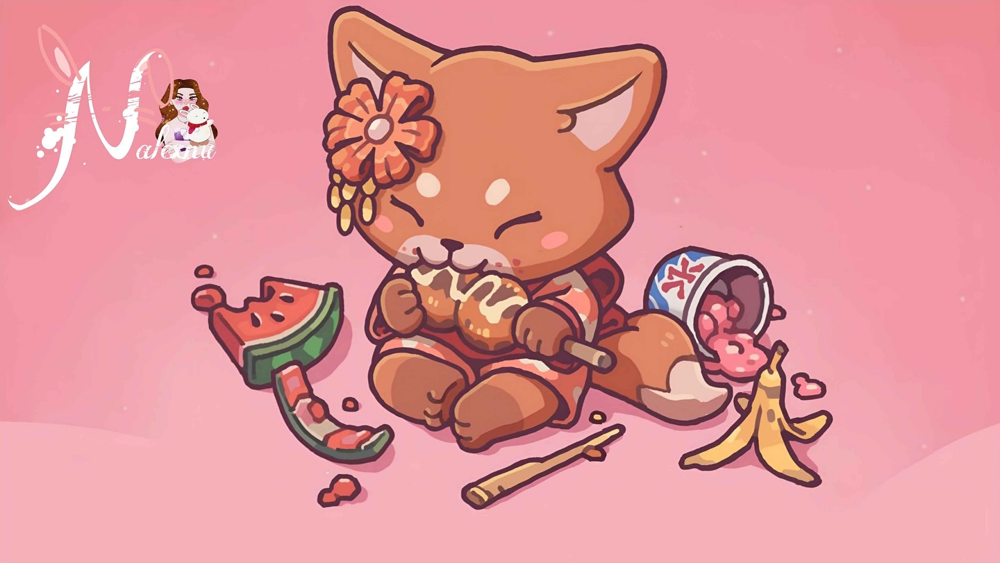
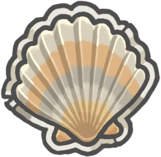
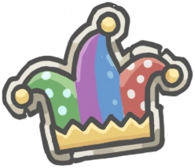
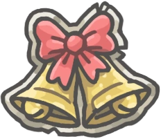
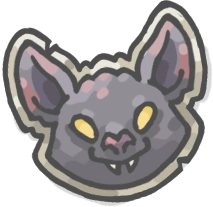
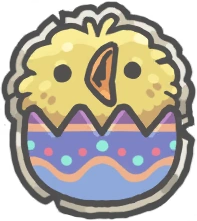

Tsuki Odyssey Objets
Inicio
Discord
Telegram
Eventos
Evento Festival de Verano
Evento Actual - 10/08/2024

Evento del Mar
31/07/2024 - 20/06/2024

Semana del bufón 2024
10/05/2024

Navidad 2023
20/06/2024

Halloween 2023
20/06/2024

Festival de Verano 2023
Pascua 2023
